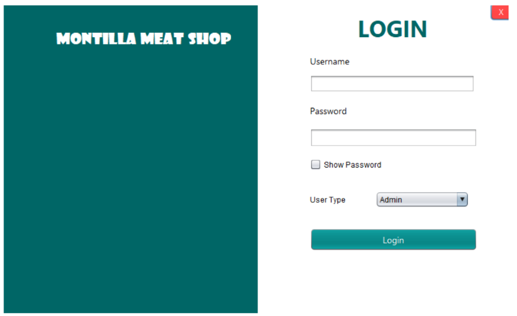

During our second year in college, we developed a system for a meat shop as part of our subject in System Architecture and Development. The project aimed to create a computerized system that would help manage the daily operations of the business more efficiently. The system was designed to handle important processes such as inventory management, product monitoring, sales recording, customer transactions, and report generation. Through this project, we gained a deeper understanding of how system architecture works, including how different components of a system interact with one another. We also learned the importance of proper planning, database design, user interface development, and system functionality in creating an effective application. Developing the meat shop system enhanced our technical skills in programming, teamwork, and problem-solving, while also giving us practical experience in building a real-world business solution. Overall, the project became a valuable learning experience that strengthened our knowledge in system development and software design.